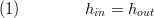
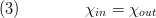

ValveVLE_L1
Created Friday 11 January 2013
A model for for valves, throttles, orifices and similar components. The pressure loss and the opening characteristics can be user-defined using replaceable models.
1. Purpose of Model

The model can be used for introducing pressure loss effects (either due to physical or numerical motivation). Since the model neglects changes in kinetic energy it implies either small density changes or adapted flange geometry. It is possible to use the valve as a check valve, for example to avoid back flows. The numerical robustness and accuracy depend strongly on the chosen replaceable model for the pressure loss.
2. Level of Detail, Physical Effects Considered and Physical Insight
2.1 Level of Detail
Referring to Brunnemann et al. [1], this model refers to the level of detail L1 because the system is modelled under phenomenological considerations that cause the pressure to drop, i.e. the opening of the valve.
2.2 Physical Effects Considered
- compressible flow (depending on replaceable model)
- adiabatic
- conservation of mass (no storage, steady flow).
- conservation of energy, no losses, no storage
- nonlinear pressure drop due to friction
2.3 Level of Insight
The pressure loss can be defined by choosing and modifying the replaceable model PressureLoss in the parameter dialog. The following models are available:
- LinearNominalPoint
- Quadratic EN60534
- Quadratic EN60534 incompressible
- QuadraticFlowFunction
- QuadraticKvs
- QuadraticNominalPoint
- QuadraticZeta
3. Limits of Validity
- negligible increase of flow velocities
- two-phase flow validity depends on chosen pressure loss model
4. Interfaces
4.1 Physical Connectors
- Inlet and outlet connectors combined for:
- Mass flow rate in the connection ports [kg/s].
- Thermodynamic pressure in the connection ports [Pa].
- Specific thermodynamic enthalpy close to the connection port s [J/kg].
- Medium properties at the ports.
4.2 Inputs
- Real Input value for the position of the valve opening. The valve opening can be set to constant by settingopeningInputIsActive to false thus creating a throttle or an orifice.
4.3 Medium Models
- Fluid Medium Model at the inlet and outlet port.
5. Nomenclature

6. Governing Equations
6.1 System Description and General model approach
The governing equations consider mainly a isenthalpic throttling process without energy losses. The hydraulic model assumes a geometric definition as sketched below. The fluid may have inlet and outlet fittings to couple the valve to the surrounding piping. The resistance of these fittings is taken into account via a geometry correction factor.
The state change of the valve can be displayed in a enthalpy-entropy-diagram and is considered as follows: The fluid entering at the inlet, denoted with (0) is throttled to the outlet pressure p_out. During this throttling process the fluid is accelerated due to reducing cross sections. the maximum speed is reached at the vena contracta, the smallest cross section (denoted (1)). The specific kinetic energy of the system is c²/2 is marked red in the figure below. The total enthalpy is constant since no energy losses occur.
At the vena contracta the outlet pressure is assumed to be reached. From point (1) to the outlet (2) the fluid is decelerated isobarically, thus increasing the specific enthalpy. The model assumes that inlet velocity equals outlet velocity, implying that inlet specific enthalpy equals outlet specific enthalpy. This assumption is made to increase the numerical robustness.
In reality the expansion process will differ slightly from this ideal two-stepped process, (e.g. due to friction pressure losses from (1 → 2)). However, since the states at the vena contracta (1) are not calculated this simple modelling ideas are sufficient.

6.2 Governing Model Equations
Energy Balance
For an Isenthalpic state transformation (no storage and no loss of energy, no changes of flow velocity) the enthalpies are equal, that is,

The above equation (1) implies constant kinetic energy (constant flow velocities) of the flow which must be guaranteed by constructive means, i.e. the outlet cross section must be larger than the inlet cross section to compensate the density decrease. If the medium is incompressible this assumption is fulfilled also for equal inlet and outlet cross sections.
Mass Balance
The mass balance for steady flow neglecting mass storage reads

Chemistry
No chemical reaction is taking place:

Hydraulics
The hydraulics are defined in the corresponding replaceable models and are accessed via
inlet.m_flow = pressureLoss.m_flow
Summaries
A summary is available including the following:
- an outline record:
- and two records of type FlangeVLE named inlet and outlet
7. Remarks for Usage
- activate or
forbid reverse flow by setting checkValve to true
- access additional summary information by setting showExpertSummary to true
- create a connector for a cross-shaped visualiser by setting showData to true
9. References
[1] Johannes Brunnemann and Friedrich Gottelt, Kai Wellner, Ala Renz, André Thüring, Volker Röder, Christoph Hasenbein, Christian Schulze, Gerhard Schmitz, Jörg Eiden: "Status of ClaRaCCS: Modelling and Simulation of Coal-Fired Power Plants with CO2 capture", 9th Modelica Conference, Munich, Germany, 2012.
[2] DIN EN 60534 -2.1 "Industrial-process control valves – Part 2-1: Flow capacity – Sizing equations for fluid flow under installed conditions" (German version), Beuth Verlag, Germany, 2011.
[3] Walter Wagner: "Regelarmaturen", ISBN 3-8023-15664-2, Vogel Buchverlag, Germany, 1996.
10. Authorship and Copyright Statement for original (initial) Contribution
Author:
DYNCAP/DYNSTART development team, Copyright 2011 - 2020.
Remarks:
This component was developed during DYNCAP/DYNSTART projects.
Acknowledgements:
ClaRa originated from the collaborative research projects DYNCAP and DYNSTART. Both research projects were supported by the German Federal Ministry for Economic Affairs and Energy (FKZ 03ET2009 and FKZ 03ET7060).
CLA:
The author(s) have agreed to ClaRa CLA, version 1.0. See https://claralib.com/pdf/CLA.pdf
By agreeing to ClaRa CLA, version 1.0 the author has granted the ClaRa development team a permanent right to use and modify his initial contribution as well as to publish it or its modified versions under the 3-clause BSD License.
11. Version History
- 2013-07-04 - v0.1 - initial implementation - Friedrich Gottelt, XRG Simulation
- 24.04.2017 - v1.2.2 - added noEvent to actualStream operator - Timm Hoppe, XRG Simulation
- 11.06.2018 - v1.3.1 - bugfixed outline summary; removed not meaningful pressure loss model from parameter dialog - Timm Hoppe, XRG Simulation
- 31.01.2019 - v1.4.0 - renamed class, renamed parameters - Timm Hoppe, XRG Simulation GmbH
Backlinks: ClaRa:Components:VolumesValvesFittings:Fittings:SprayInjectorVLE L3 ClaRa:A User Guide:Revisions:v1.7.0